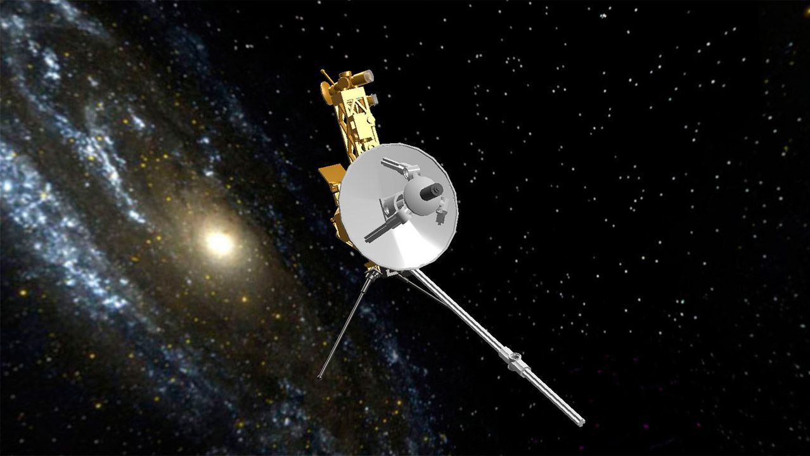
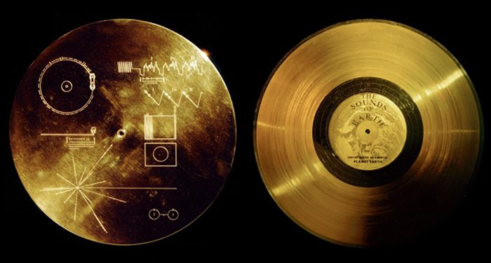

Voyager I
La Voyager 1 llegó al espacio interestelar en agosto de 2012 y es el objeto más distante creado por humanos que existe. Lanzada poco después de su nave espacial gemela, la Voyager 2, en 1977, la Voyager 1 exploró los sistemas joviano y saturnino descubriendo nuevas lunas, volcanes activos y una gran cantidad de datos sobre el sistema solar exterior.
Datos curiosos
- Ninguna nave espacial ha ido más lejos que la Voyager 1 de la NASA. Lanzada en 1977 para volar por Júpiter y Saturno, la Voyager 1 cruzó al espacio interestelar en agosto de 2012 y continúa recopilando información en la actualidad.
- La Voyager 1 y su nave hermana, la Voyager 2, han estado volando más tiempo que cualquier otra nave espacial en la historia.
- Las misiones Voyager no solo brindan a la humanidad observaciones de territorios verdaderamente inexplorados, sino que también ayudan a los científicos a comprender la naturaleza misma de la energía y la radiación en el espacio, información clave para proteger futuras misiones y astronautas.
Disco de Oro, Voyager I
La Voyager 1 lleva una copia del Disco Dorado, un mensaje de la humanidad al cosmos que incluye saludos en 55 idiomas, fotografías de personas y lugares de la Tierra y música que va desde Beethoven hasta "Johnny B. Goode" de Chuck Berry.
Fragmento de audio, Voyager I
Se escuchara una de las canciones mas iconicas de la musica clasica y que esta grabada en el disco de oro que transporta el Voyager I, la interpretación esta a cargo Eddar Moser (Soprano) y la Ópera del Estado de Baviera dirigido por Wolfgang Sawallisch, el autor original de dicha obra musical es Mozart, el cual dio a conocer su obra con el nombre de la flauta mágica.